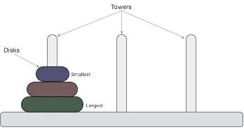

Tower of Hanoi, is a mathematical puzzle which consists of three tower (pegs) and more than one rings; as depicted below −
These rings are of different sizes and stacked upon in ascending order i.e. the smaller one sits over the larger one. There are other variations of puzzle where the number of disks increase, but the tower count remains the same.
The mission is to move all the disks to some another tower without violating the sequence of arrangement. The below mentioned are few rules which are to be followed for tower of hanoi −
Here is an animated representation of solving a tower of hanoi puzzle with three disks −

Tower of hanoi puzzle with n disks can be solved in minimum 2n−1 steps. This presentation shows that a puzzle with 3 disks has taken 23−1 = 7 steps.
To write an algorithm for Tower of Hanoi, first we need to learn how to solve this problem with lesser amount of disks, say → 1 or 2. We mark three towers with name, source, destination and aux (only to help moving disks). If we have only one disk, then it can easily be moved from source to destination peg.
If we have 2 disks −
aux pegdestination pegaux to destination peg.
So now we are in a position to design algorithm for Tower of Hanoi with more than two disks. We divide the stack of disks in two parts. The largest disk (nth disk) is in one part and all other (n-1) disks are in second part.
Our ultimate aim is to move disk n from source to destination and then put all other (n-1) disks onto it. Now we can imagine to apply the same in recursive way for all given set of disks.
So steps to follow are −
Step 1 − Move n-1 disks fromsourcetoauxStep 2 − Move nth disk fromsourcetodestStep 3 − Move n-1 disks fromauxtodest
A recursive algorithm for Tower of Hanoi can be driven as follows −
START
Procedure Hanoi(disk, source, dest, aux)
IF disk == 0, THEN
move disk from source to dest
ELSE
Hanoi(disk - 1, source, aux, dest) // Step 1
move disk from source to dest // Step 2
Hanoi(disk - 1, aux, dest, source) // Step 3
END IF
END Procedure
STOP
To check the implementation in C programming, click here.